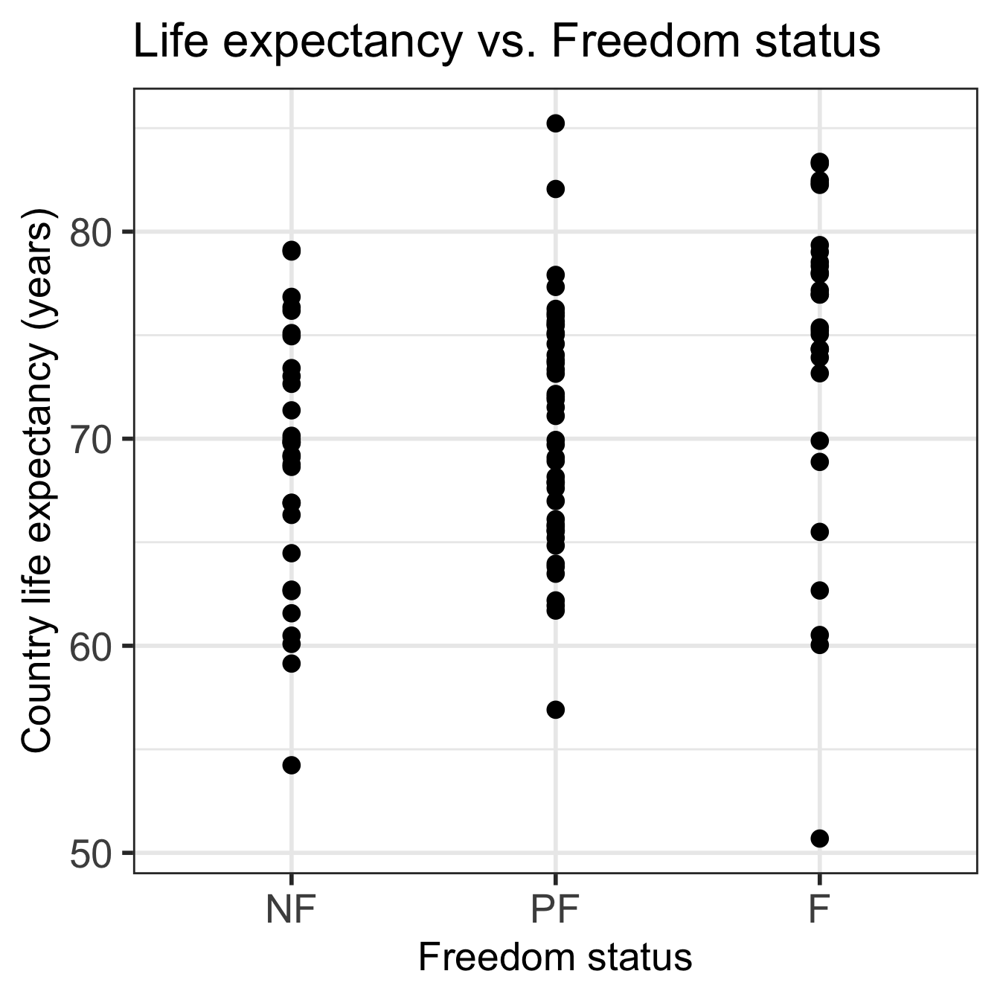

Code
ggplot(gapm, aes(x = fct_reorder(freedom_status, fs_order), y = life_exp)) +
geom_point() +
labs(x = "Freedom status",
y = "Country life expectancy (years)",
title = "Life expectancy vs. Freedom status") +
theme(axis.title = element_text(size = 20),
axis.text = element_text(size = 20),
title = element_text(size = 20))